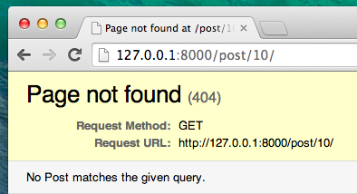

Erweitere deine Anwendung
Wir haben nun all die notwendigen Schritte abgeschlossen, um eine Website zu erstellen: Wir wissen, wie wir ein Model, eine URL, eine View und ein Template erstellen. Wir wissen auch, wie wir unsere Webseite verschönern können.
Zeit zum Üben!
Das erste, was unser Blog gebrauchen könnte, ist eine Seite auf der ein Blogpost dargestellt werden kann, oder?
Wir haben bereits ein Post-Model, deshalb brauchen wir dieses nicht mehr zur models.py hinzufügen.
Erstelle eine Template-Verknüpfung
Wir beginnen damit, einen Link in der blog/templates/blog/post_list.html-Datei zu erstellen. Bis jetzt sieht sie so aus:
{% extends 'blog/base.html' %}
{% block content %}
{% for post in posts %}
<div class="post">
<div class="date">
{{ post.published_date }}
</div>
<h1><a href="">{{ post.title }}</a></h1>
<p>{{ post.text|linebreaksbr }}</p>
</div>
{% endfor %}
{% endblock content %}
Wir wollen einen Link von einem Post-Titel in der Post-Liste zu einer Post-Detailseite haben. Ändern wir <h1><a href="">{{ post.title }}</a></h1>, so dass es zu der Detailseite verlinkt:
<h1><a href="{% url 'post_detail' pk=post.pk %}">{{ post.title }}</a></h1>
Es ist an der Zeit, das mysteriöse {% url 'post_detail' pk=post.pk %} zu erklären. Wie du dir wahrscheinlich schon denkst, bedeutet {% %}, dass wir Django Template Tags verwenden. Dieses Mal verwenden wir eines, dass eine URL für uns erzeugen wird!
blog.views.post_detail ist der Pfad zu einer post_detail-View, die wir erstellen wollen. Beachte bitte: blog ist der Name unserer App (das Verzeichnis blog), views kommt aus der views.py-Datei und der letzte Teil - post_detail - ist der Name der View.
Wenn wir jetzt auf http://127.0.0.1:8000/ gehen, bekommen wir einen Fehler (so wie erwartet, da wir ja noch keine URL oder View für post_detail haben). Er wird folgendermaßen aussehen:

Erstelle eine URL
Lass uns eine URL in urls.py für unsere post_detail-View erstellen!
Wir wollen, dass Details unseres ersten Blogposts unter dieser URL angezeigt werden: http://127.0.0.1:8000/post/1/
Lass uns eine URL in der Datei blog/urls.py anlegen, um Django auf die View hinzuweisen, genannt post_detail, welche einen ganzen Blogpost anzeigen wird. Füge die Zeile url(r'^post/(?P<pk>[0-9]+)/$', views.post_detail, name='post_detail') zu der Datei blog/urls.py hinzu. Die Datei sollte so aussehen:
from django.conf.urls import url
from . import views
urlpatterns = [
url(r'^$', views.post_list, name='post_list'),
url(r'^post/(?P<pk>\d+)/$', views.post_detail, name='post_detail'),
]
Dieser Teil ^post/(?P<pk>[0-9]+)/$ sieht beängstigend aus, aber hab keine Angst - wir erklären es dir: - es beginnt mit ^ --"Der Anfang" -post/ bedeutet lediglich, die URL sollte nach dem Anfang das Wort post und / enthalten. So weit, so gut. (?P<pk>[0-9]+) - dieser Teil ist schwieriger. Er bedeutet, dass Django alles, was hier steht, in einer Variable namens pk zu einem View transferiert. [0-9] sagt uns, dass hier nur eine Zahl, kein Buchstabe, stehen darf (also alles zwischen 0 und 9). +bedeutet, dass hier mindestens eine (oder mehrere) Ziffer(n) stehen müssen. Also so etwas wie http://127.0.0.1:8000/post// geht nicht, aber http://127.0.0.1:8000/post/1234567890/ ist genau richtig! Dann folgt ein / - wir brauchen also wieder einen / und $ - "Ende"!
Also wenn du http://127.0.0.1:8000/post/5/ in deinen Browser eingibst, wird Django verstehen, dass du nach einer View suchst, die post_detail heißt und wird der View übergeben, dass die Variable pk gleich 5 lautet.
pk ist eine Abkürzung für primary key. Diese Bezeichnung wird oft in Django-Projekten benutzt. Du kannst deine Variable aber nennen, wie du willst (denk aber daran: Kleinbuchstaben und _ anstelle von Leerzeichen). Zum Beispiel anstelle von (?P<pk>[0-9]+) können wir die Variable post_id nehmen, dieser Teil würde also (?P<post_id>[0-9]+) lauten.
Ok, wir haben ein neues URL-Muster zu der Datei blog/urls.py hinzugefügt! Lass uns die Seite http://127.0.0.1:8000/ aktualisieren. Boom! Erneut ein Fehler! Wie erwartet!

Erinnerst du dich, was der nächste Schritt ist? Natürlich: eine View hinzufügen!
Füge eine View hinzu
Dieses Mal bekommt unsere View den extra Parameter pk. Unsere View muss diesen abfangen, richtig? Also definieren wir unsere Funktion mit def post_detail(request, pk). Beachte, dass wir genau den gleichen Variablennamen benutzen müssen, wie in den URLs festgelegt (pk). Eine fehlerhafte Variable führt zu einem Fehler!
Jetzt benötigen wir also genau einen bestimmten Blogpost. Diesen finden wir, indem wir ein Queryset folgendermaßen schreiben:
Post.objects.get(pk=pk)
Aber bei diesem Code gibt es ein Problem. Wenn es kein Post-Objekt mit diesem primary key (pk) gibt, bekommen wir einen schlimmen Fehler!

Das wollen wir nicht! Natürlich stellt uns Django etwas zur Verfügung, um dieses Problem zu umgehen: get_object_or_404. Wenn es kein Post-Objekt mit einem gegebenen pk gibt, wird eine schöne Seite angezeigt (die sogenannte Page Not Found 404 Seite).

Die gute Neuigkeit ist, dass du auch deine eigene Page not found-Seite ("Seite nicht gefunden"-Seite) erstellen und diese so hübsch gestalten kannst, wie du willst. Aber da das gerade nicht so wichtig ist, überspringen wir das erst einmal.
Okay, es wird Zeit, die View zu unserer views.py-Datei hinzuzufügen!
Wir öffnen blog/views.py und fügen folgenden Code zu den anderen "from"-Zeilen hinzu:
from django.shortcuts import render, get_object_or_404
Am Ende der Datei fügen wir unsere View hinzu:
def post_detail(request, pk):
post = get_object_or_404(Post, pk=pk)
return render(request, 'blog/post_detail.html', {'post': post})
Super. Lass uns nun http://127.0.0.1:8000/ aktualisieren.

Es hat funktioniert! Aber was passiert, wenn du auf den Link im Blog-Titel klickst?

Oh nein! Ein anderer Fehler! Aber wir wissen ja schon, wie wir mit diesem umgehen, oder? Wir müssen ein Template hinzufügen!
Erzeuge ein Template
Wir erstellen eine Datei in blog/templates/blog mit dem Namen post_detail.html.
Das sieht dann so aus:
{% extends 'blog/base.html' %}
{% block content %}
<div class="post">
{% if post.published_date %}
<div class="date">
{{ post.published_date }}
</div>
{% endif %}
<h1>{{ post.title }}</h1>
<p>{{ post.text|linebreaksbr }}</p>
</div>
{% endblock %}
Wir erweitern wieder base.html. Im content-Block wollen wir das Publikationsdatum eines Posts (published_date), falls es existiert, anzeigen und auch den Titel und den Text. Aber wir müssen noch ein paar wichtige Dinge klären, oder?
{% if ... %} ... {% endif %} ist ein Template-Tag, das wir nutzen können, um etwas zu überprüfen (erinnerst du dich: if ...else ..</1> aus dem Kapitel <strong>Einführung in Python</strong>? In diesem Szenario wollen wir prüfen, ob ein <code>published_date eines Blogposts leer ist.
Okay, wir aktualisieren die Seite und sehen, dass Page not found nun weg ist.

Yeah! Es funktioniert!
Eins noch: Zeit für das Deployment!
Es wäre schön zu sehen, ob deine Website noch auf PythonAnywhere funktioniert, richtig? Lass sie uns erneut bereitstellen.
$ git status
$ git add --all .
$ git status
$ git commit -m "Added view and template for detailed blog post as well as CSS for the site."
$ git push
- Dann führe Folgendes in der PythonAnywhere Bash-Konsole aus:
$ cd my-first-blog
$ source myvenv/bin/activate
(myvenv)$ git pull
[...]
(myvenv)$ python manage.py collectstatic
[...]
- Springe nun noch schnell auf den Web-Tab und klicke auf Reload.
Und das war's! Glückwunsch :)